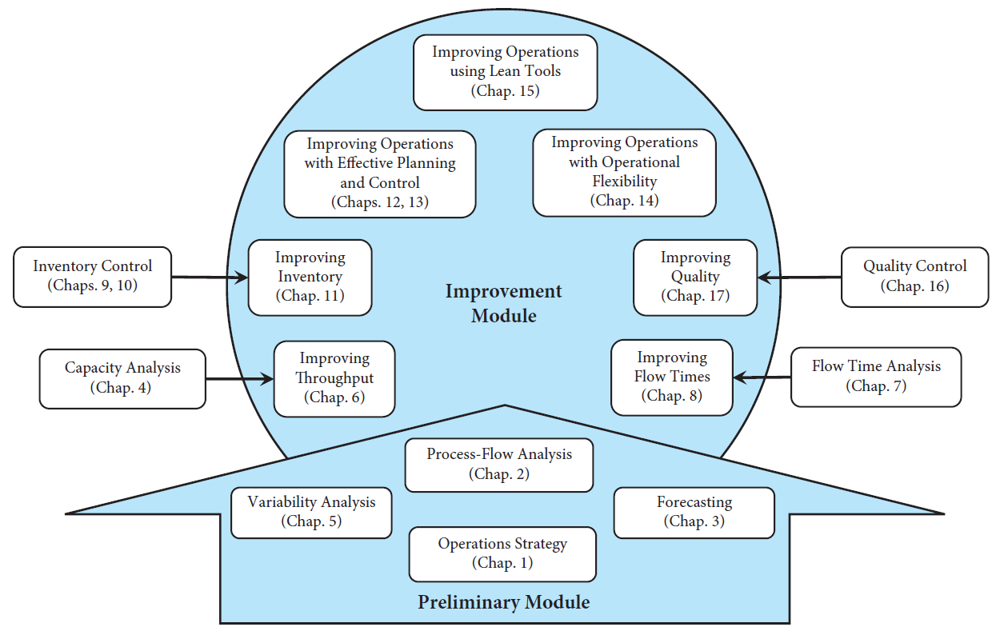

Professor of Industrial Engineering and Management Sciences
SEYED M.R. IRAVANI


OPERATIONS ENGINEERING AND MANAGEMENT
Concepts, Analytics and Principles for Improvement
This is a textbook for operations management courses in industrial engineering and manufacturing engineering programs. The book is suited for advanced undergraduate (e.g., senior-level) students and as a first course in operations engineering and management for graduate students.
The textbook is also suited for dual-degree programs in engineering and management schools, for example, Master of Engineering Management (MEM), and can be used for operations management courses in more technical MBA programs.
Each individual chapter or a collection of chapters of the book can be used as a part of different courses. For example, Chap. 14, which is about Operational Flexibility can be used as a part of any operations management or supply chain management course in both management and engineering schools. Here are the links to McGraw-Hill, Amazon and Barnes & Noble for my book.
Concepts, Analytics and Principles for Improvement
This is a textbook for operations management courses in industrial engineering and manufacturing engineering programs. The book is suited for advanced undergraduate (e.g., senior-level) students and as a first course in operations engineering and management for graduate students.
The textbook is also suited for dual-degree programs in engineering and management schools, for example, Master of Engineering Management (MEM), and can be used for operations management courses in more technical MBA programs.
Each individual chapter or a collection of chapters of the book can be used as a part of different courses. For example, Chap. 14, which is about Operational Flexibility can be used as a part of any operations management or supply chain management course in both management and engineering schools. Here are the links to McGraw-Hill, Amazon and Barnes & Noble for my book.
MY BOOK

The above figure shows an overview of the book. As the figure shows, the core of the book is on Performance Improvement of operations in manufacturing and service systems.
PRELIMINARY MODULES
The chapters in this module introduce the preliminary concepts and tools that provide readers with a better understanding of the two sides of any operations: (i) demand, and (2) supply. Chapter 1 (Operations Strategy) describes how firms gain competitive advantages by better aligning their process (i.e., supply) with the market (i.e., demand). Chapter 2 (Process-Flow Analysis) presents the process-flow perspective of operations and introduces process-flow measures—throughput, flow time, inventory, and quality—that have significant impact on the financial performance of a firm and thus on its success in the market. Chapter 3 (Forecasting) discusses the demand side of operations and provides several analytics to forecast the demand of a product. Finally, Chap. 5 (Variability Analysis) describes how variability in demand or in supply affects management and control of operations.
IMPROVEMENT MODULES
The focus of the Improvement Module is on providing a wide range of strategic and tactical decision principles that can improve operations performance of. This module can be divided into two groups: Analysis and Improvement.
Analysis: The Analysis part includes chapters that provide basic concepts and analytics required for improvement of four process-flow measures of a process—throughput, flow time, inventory, and quality. Chapter 4 (Capacity Analysis) is required for improving throughput of a process; Chap. 7 (Flow Time Analysis) is required for improving flow times; Chaps. 9 and 10 (Inventory Control) are required for improving inventory; and Chap. 16 (Quality Control) is required for improving quality.
Improvement: Specific to each of the four main process-flow measures, there is a corresponding chapter that provides several strategies to improve each measure, namely Chap. 6 (Improving Throughput), Chap. 8 (Improving Flow Time), Chap. 11 (Improving Inventory), and Chap. 17 (Improving Quality). In addition, the Improvement Module includes several chapters that provide effective practices that can improve several operations performance measures. Improving operations with Operational Flexibility in Chap. 14 describes the design and control principles for using flexible resources and postponement strategy to improve performance. Lean Operations in Chap. 15 presents lean operations tools and shows how they improve all aspects of operations. Finally, Chaps. 12 and 13 focus on developing efficient production planning and scheduling policies to improve performance.
PRELIMINARY MODULES
The chapters in this module introduce the preliminary concepts and tools that provide readers with a better understanding of the two sides of any operations: (i) demand, and (2) supply. Chapter 1 (Operations Strategy) describes how firms gain competitive advantages by better aligning their process (i.e., supply) with the market (i.e., demand). Chapter 2 (Process-Flow Analysis) presents the process-flow perspective of operations and introduces process-flow measures—throughput, flow time, inventory, and quality—that have significant impact on the financial performance of a firm and thus on its success in the market. Chapter 3 (Forecasting) discusses the demand side of operations and provides several analytics to forecast the demand of a product. Finally, Chap. 5 (Variability Analysis) describes how variability in demand or in supply affects management and control of operations.
IMPROVEMENT MODULES
The focus of the Improvement Module is on providing a wide range of strategic and tactical decision principles that can improve operations performance of. This module can be divided into two groups: Analysis and Improvement.
Analysis: The Analysis part includes chapters that provide basic concepts and analytics required for improvement of four process-flow measures of a process—throughput, flow time, inventory, and quality. Chapter 4 (Capacity Analysis) is required for improving throughput of a process; Chap. 7 (Flow Time Analysis) is required for improving flow times; Chaps. 9 and 10 (Inventory Control) are required for improving inventory; and Chap. 16 (Quality Control) is required for improving quality.
Improvement: Specific to each of the four main process-flow measures, there is a corresponding chapter that provides several strategies to improve each measure, namely Chap. 6 (Improving Throughput), Chap. 8 (Improving Flow Time), Chap. 11 (Improving Inventory), and Chap. 17 (Improving Quality). In addition, the Improvement Module includes several chapters that provide effective practices that can improve several operations performance measures. Improving operations with Operational Flexibility in Chap. 14 describes the design and control principles for using flexible resources and postponement strategy to improve performance. Lean Operations in Chap. 15 presents lean operations tools and shows how they improve all aspects of operations. Finally, Chaps. 12 and 13 focus on developing efficient production planning and scheduling policies to improve performance.
OVERVIEW OF THE CHAPTERS OF THE BOOK